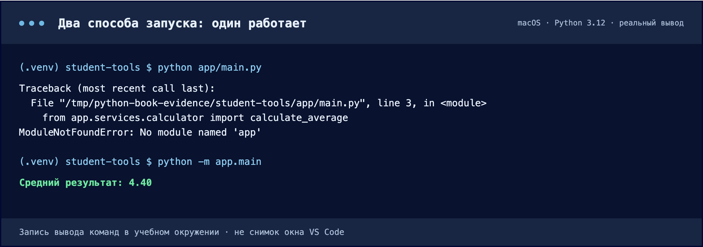
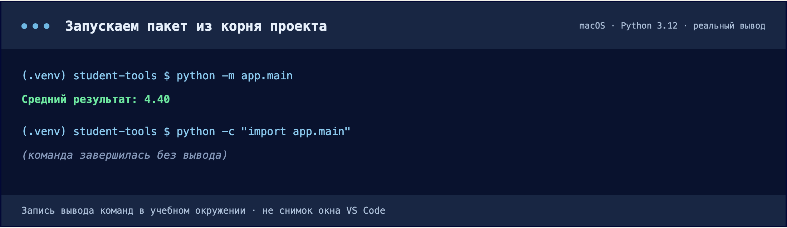

Собираем пакет и запускаем его
Группируем связанные модули, добавляем __init__.py и разбираем команду python -m.
Когда становится тесно в корне
- Где
- Explorer в той же папке student-tools.
- Действие
- Создайте app, внутри services и utils. Перетащите main.py в app, calculator.py в services, formatter.py в utils.
- Результат
- В корне не осталось прежних .py-файлов; .venv остаётся в корне.
- Проверка
- Раскройте папки и сопоставьте пути с деревом ниже. Пока не запускайте: импорты обновим через два шага.
Три файла легко найти. Когда модулей становится тридцать, полезно объединить связанные части в каталоги. Пакет организует модули в пространство имён: путь app.services.calculator говорит больше, чем случайное file3.
Переместите main.py в app, calculator.py в app/services, formatter.py в app/utils. Старые копии в корне удалите после переноса. Окружение остаётся рядом с app.
Корень проекта. Отсюда выполняются команды запуска.
__init__.py: обычный пакет
- Где
- Explorer: папки app, app/services и app/utils.
- Действие
- В каждой папке: New File → __init__.py → сохранить пустым.
- Результат
- Появились три отдельных пустых файла с одинаковым именем.
- Проверка
- Проверьте два подчёркивания до и после init и расширение .py.
Создайте пустой __init__.py в app, services и utils. В имени по два подчёркивания с обеих сторон init. Этот файл обозначает обычный пакет и при необходимости может содержать код инициализации.
Для нашей программы оставьте его пустым. Специальные имена с двойными подчёркиваниями называют dunder. Не путайте файл __init__.py с методом __init__ внутри класса.
Импорт отражает новую структуру
- Где
- Редактор: student-tools/app/main.py.
- Действие
- Обновите два локальных импорта как в коде ниже и сохраните файл.
- Результат
- Пути импортов начинаются с app.services и app.utils.
- Проверка
- calculator.py и formatter.py остались прежними. Следующим шагом выполните запуск через -m.
from rich.console import Console
from app.services.calculator import calculate_average
from app.utils.formatter import format_average
def main():
values = [5, 4, 5, 3, 5]
average = calculate_average(values)
console = Console()
console.print(f"[bold green]{format_average(average)}[/bold green]")
if __name__ == "__main__":
main()Содержимое calculator.py и formatter.py остаётся прежним. Меняются два импорта в main.py: добавляются имена пакетов.
Нажмите на часть пути: от пакета приложения до конкретной функции.
Запускайте модуль из корня
- Где
- Терминал: student-tools/, рядом с app.
- Действие
- Выполните python -m app.main, затем команду проверки импорта ниже.
- Результат
- Первый запуск показывает 4.40; импорт app.main не печатает отчёт.
- Проверка
- Если app не найден, проверьте текущую папку: она должна содержать app, а не находиться внутри неё.
python -m app.main-m просит Python найти модуль по имени и выполнить его как главный. Здесь это app/main.py. Корень проекта попадает в путь поиска, поэтому абсолютные импорты с app разрешаются.
Почему один и тот же код запускается по-разному
Запуская программу, Python первым делом решает, откуда искать импортируемые пакеты. Стартовая папка поиска зависит от способа запуска — и именно она решает, будет ли виден пакет app.
Python начинает поиск с текущей папки — корня проекта. Внутри него виден пакет app, поэтому импорт from app.services.calculator работает.

Сверху — запуск файлом: поиск начинается с папки app, самого пакета app из неё не видно, и первый же импорт падает. Снизу — запуск модулем из корня проекта: тот же файл отрабатывает и печатает результат.
Скачать текст вывода ↓ · Нажмите на изображение, чтобы увеличить.Проверьте, что в выводе осталось Средний результат: 4.40. Проверить отсутствие побочного запуска можно командой ниже: она должна завершиться без отчёта об оценках.
python -c "import app.main"
После python -m app.main появляется отчёт. После import app.main вывода нет: защита __name__ предотвращает повторный запуск сценария.
Скачать текст вывода ↓ · Нажмите на изображение, чтобы увеличить.Структура и архитектура
Структура отвечает на вопрос «где лежит файл?». Архитектура — «какая у части ответственность и от кого она зависит?». Папка services сама не делает программу правильно устроенной: важно, чтобы вычисления не зависели от интерфейса вывода.
Имена app, src, core зависят от команды и проекта. Здесь services хранит прикладной расчёт, utils — небольшую функцию оформления. Создавать пустые папки «на будущее» не требуется.
Проверьте себя · Что изменилось после переноса функций в пакеты?
Расположение файлов, пути двух импортов и команда запуска. Формула расчёта и ожидаемый результат остались прежними.
Документация к теме
Python: venv · Python: модули и пакеты · VS Code: Python environments · pip freeze